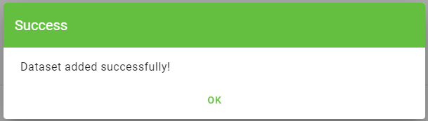
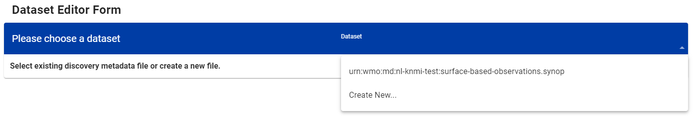

Configurazione dei dataset in wis2box
Risultati dell'apprendimento
Al termine di questa sessione pratica, sarai in grado di:
- creare un nuovo dataset
- creare metadati di scoperta per un dataset
- configurare le mappature dei dati per un dataset
- pubblicare una notifica WIS2 con un record WCMP2
- aggiornare e ripubblicare il tuo dataset
Introduzione
wis2box utilizza dataset associati a metadati di scoperta e mappature dei dati.
I metadati di scoperta sono utilizzati per creare un record WCMP2 (WMO Core Metadata Profile 2) che viene condiviso utilizzando una notifica WIS2 pubblicata sul tuo wis2box-broker.
Le mappature dei dati sono utilizzate per associare un plugin di dati ai tuoi dati di input, permettendo la trasformazione dei dati prima della loro pubblicazione tramite la notifica WIS2.
Questa sessione ti guiderà nella creazione di un nuovo dataset, nella creazione di metadati di scoperta e nella configurazione delle mappature dei dati. Esaminerai il tuo dataset nell'API di wis2box e rivedrai la notifica WIS2 per i tuoi metadati di scoperta.
Preparazione
Connettiti al tuo broker utilizzando MQTT Explorer.
Invece di utilizzare le credenziali interne del tuo broker, usa le credenziali pubbliche everyone/everyone:

Note
Non è mai necessario condividere le credenziali del tuo broker interno con utenti esterni. L'utente 'everyone' è un utente pubblico per consentire la condivisione delle notifiche WIS2.
Le credenziali everyone/everyone hanno accesso in sola lettura all'argomento 'origin/a/wis2/#'. Questo è l'argomento dove vengono pubblicate le notifiche WIS2. Il Global Broker può iscriversi con queste credenziali pubbliche per ricevere le notifiche.
L'utente 'everyone' non vedrà argomenti interni o sarà in grado di pubblicare messaggi.
Apri un browser e accedi a http://<your-host>/wis2box-webapp. Assicurati di essere loggato e di poter accedere alla pagina 'editor dei dataset'.
Consulta la sezione su Inizializzazione di wis2box se hai bisogno di ricordare come connetterti al broker o accedere alla webapp di wis2box.
Crea un token di autorizzazione per processes/wis2box
Avrai bisogno di un token di autorizzazione per l'endpoint 'processes/wis2box' per pubblicare il tuo dataset.
Per creare un token di autorizzazione, accedi alla tua VM di formazione tramite SSH e usa i seguenti comandi per accedere al container di gestione di wis2box:
cd ~/wis2box-1.0.0rc1
python3 wis2box-ctl.py login
Poi esegui il seguente comando per creare un token di autorizzazione generato casualmente per l'endpoint 'processes/wis2box':
wis2box auth add-token --path processes/wis2box
Puoi anche creare un token con un valore specifico fornendo il token come argomento al comando:
wis2box auth add-token --path processes/wis2box MyS3cretToken
Assicurati di copiare il valore del token e di conservarlo sul tuo computer locale, poiché ti servirà in seguito.
Una volta ottenuto il tuo token, puoi uscire dal container di gestione di wis2box:
exit
Creazione di un nuovo dataset nella wis2box-webapp
Naviga alla pagina 'editor dei dataset' nella webapp di wis2box della tua istanza wis2box andando a http://<your-host>/wis2box-webapp e selezionando 'editor dei dataset' dal menu sul lato sinistro.
Nella pagina 'editor dei dataset', sotto la scheda 'Datasets', clicca su "Crea nuovo ...":

Apparirà una finestra popup, chiedendoti di fornire:
- ID del Centro: questo è l'acronimo dell'agenzia (in minuscolo e senza spazi), come specificato dal Membro WMO, che identifica il centro dati responsabile della pubblicazione dei dati.
- Tipo di Dati: Il tipo di dati per cui stai creando metadati. Puoi scegliere tra l'utilizzo di un modello predefinito o selezionare 'altro'. Se selezioni 'altro', sarà necessario compilare manualmente più campi.
ID del Centro
Il tuo id-centro dovrebbe iniziare con il TLD del tuo paese, seguito da un trattino (-) e un nome abbreviato della tua organizzazione (ad esempio it-meteoitalia). L'id-centro deve essere in minuscolo e utilizzare solo caratteri alfanumerici. L'elenco a discesa mostra tutti gli id-centro attualmente registrati su WIS2 così come qualsiasi id-centro che hai già creato in wis2box.
Modelli di Tipo di Dati
Il campo Tipo di Dati ti permette di selezionare da un elenco di modelli disponibili nell'editor dei dataset di wis2box-webapp. Un modello precompila il modulo con valori predefiniti suggeriti appropriati per il tipo di dati. Questo include titolo e parole chiave suggerite per i metadati e plugin di dati preconfigurati. L'argomento sarà fissato all'argomento predefinito per il tipo di dati.
Ai fini della formazione utilizzeremo il tipo di dati weather/surface-based-observations/synop che include plugin di dati che assicurano che i dati vengano trasformati in formato BUFR prima della pubblicazione.
Se vuoi pubblicare avvisi CAP utilizzando wis2box, usa il modello weather/advisories-warnings. Questo modello include un plugin di dati che verifica che i dati di input siano un avviso CAP valido prima della pubblicazione. Per creare avvisi CAP e pubblicarli tramite wis2box puoi utilizzare CAP Composer.
Scegli un id-centro appropriato per la tua organizzazione.
Per Tipo di Dati, seleziona weather/surface-based-observations/synop:

Clicca continua al modulo per procedere, ora ti verrà presentato il Modulo Editor dei Dataset.
Dato che hai selezionato il tipo di dati weather/surface-based-observations/synop, il modulo sarà precompilato con alcuni valori iniziali relativi a questo tipo di dati.
Creazione di metadati di scoperta
Il Modulo Editor dei Dataset ti permette di fornire i Metadati di Scoperta per il tuo dataset che il container di gestione di wis2box utilizzerà per pubblicare un record WCMP2.
Dato che hai selezionato il tipo di dati 'weather/surface-based-observations/synop', il modulo sarà precompilato con alcuni valori predefiniti.
Assicurati di sostituire l'ID locale auto-generato con un nome descrittivo per il tuo dataset, ad es. 'synop-dataset-wis2training':

Rivedi il titolo e le parole chiave, e aggiornali se necessario, e fornisci una descrizione per il tuo dataset.
Nota che ci sono opzioni per cambiare la 'Politica dei Dati WMO' da 'core' a 'raccomandata' o per modificare il tuo Identificatore di Metadati predefinito, per favore mantieni la politica dei dati come 'core' e usa l'Identificatore di Metadati predefinito.
Successivamente, rivedi la sezione che definisce le tue 'Proprietà Temporali' e 'Proprietà Spaziali'. Puoi regolare il riquadro di delimitazione aggiornando i campi 'Latitudine Nord', 'Latitudine Sud', 'Longitudine Est' e 'Longitudine Ovest':

Successivamente, compila la sezione che definisce le 'Informazioni di Contatto del Fornitore dei Dati':

Infine, compila la sezione che definisce le 'Informazioni sulla Qualità dei Dati':
Una volta completate tutte le sezioni, clicca su 'VALIDA MODULO' e controlla il modulo per eventuali errori:

Se ci sono errori, correggili e clicca nuovamente su 'VALIDA MODULO'.
Assicurati di non avere errori e che ricevi una notifica popup che indica che il tuo modulo è stato validato:

Successivamente, prima di inviare il tuo dataset, rivedi le mappature dei dati per il tuo dataset.
Configurazione delle mappature dei dati
Dato che hai utilizzato un modello per creare il tuo dataset, le mappature dei dati sono state precompilate con i plugin predefiniti per il tipo di dati 'weather/surface-based-observations/synop'. I plugin di dati sono utilizzati in wis2box per trasformare i dati prima che vengano pubblicati utilizzando la notifica WIS2.

Nota che puoi cliccare sul pulsante "aggiorna" per cambiare le impostazioni del plugin come l'estensione del file e il modello di file, puoi lasciare le impostazioni predefinite per ora. In una sessione successiva, imparerai di più sul formato BUFR e sulla trasformazione dei dati in formato BUFR.
Invio del tuo dataset
Infine, puoi cliccare su 'invia' per pubblicare il tuo dataset.
Dovrai fornire il token di autorizzazione per 'processes/wis2box' che hai creato in precedenza. Se non l'hai ancora fatto, puoi creare un nuovo token seguendo le istruzioni nella sezione di preparazione.
Controlla di ricevere il seguente messaggio dopo aver inviato il tuo dataset, indicando che il dataset è stato inviato con successo:

Dopo aver cliccato su 'OK', verrai reindirizzato alla pagina principale dell'Editor dei Dataset. Ora, se clicchi sulla scheda 'Dataset', dovresti vedere il tuo nuovo dataset elencato:

Revisione della notifica WIS2 per i tuoi metadati di scoperta
Vai a MQTT Explorer, se eri connesso al broker, dovresti vedere una nuova notifica WIS2 pubblicata sull'argomento origin/a/wis2/<your-centre-id>/metadata:

Ispeziona il contenuto della notifica WIS2 che hai pubblicato. Dovresti vedere un JSON con una struttura corrispondente al formato del Messaggio di Notifica WIS (WNM).
Question
Su quale argomento viene pubblicata la notifica WIS2?
Clicca per rivelare la risposta
La notifica WIS2 viene pubblicata sull'argomento origin/a/wis2/<your-centre-id>/metadata.
Question
Prova a trovare il titolo, la descrizione e le parole chiave che hai fornito nei metadati di scoperta nella notifica WIS2. Riesci a trovarli?
Clicca per rivelare la risposta
Nota che il titolo, la descrizione e le parole chiave che hai fornito nei metadati di scoperta non sono presenti nel payload della notifica WIS2!
Invece, prova a cercare il link canonico nella sezione "links" nella notifica WIS2:

La notifica WIS2 contiene un link canonico al record WCMP2 che è stato pubblicato. Se copi e incolli questo link in un browser, scaricherai il record WCMP2 e vedrai il titolo, la descrizione e le parole chiave che hai fornito.
Conclusione
Congratulazioni!
In questa sessione pratica, hai imparato a:
- creare un nuovo dataset
- definire i tuoi metadati di scoperta
- rivedere le tue mappature dei dati
- pubblicare metadati di scoperta
- rivedere la notifica WIS2 per i tuoi metadati di scoperta